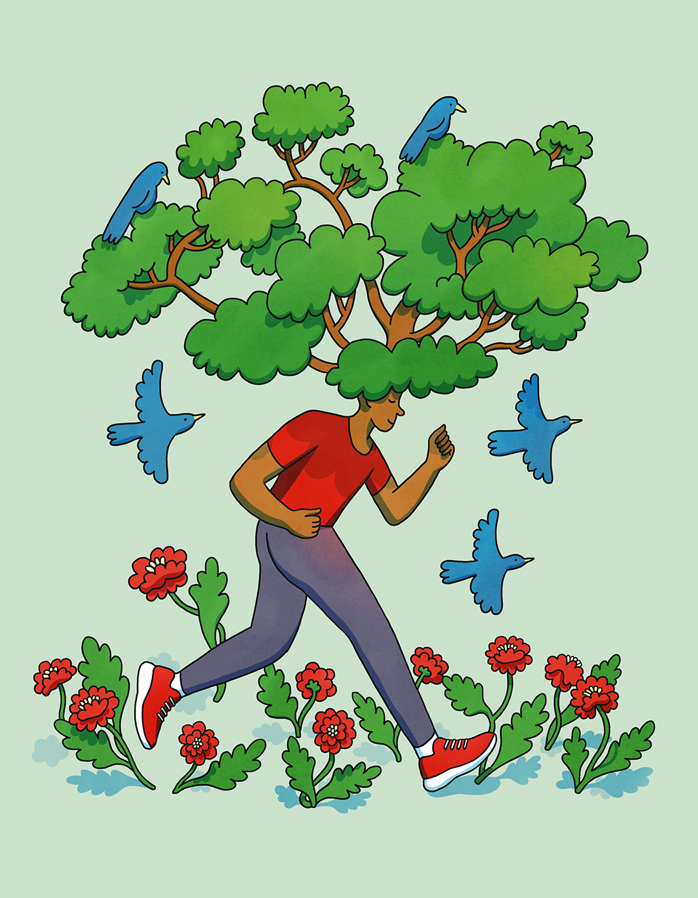
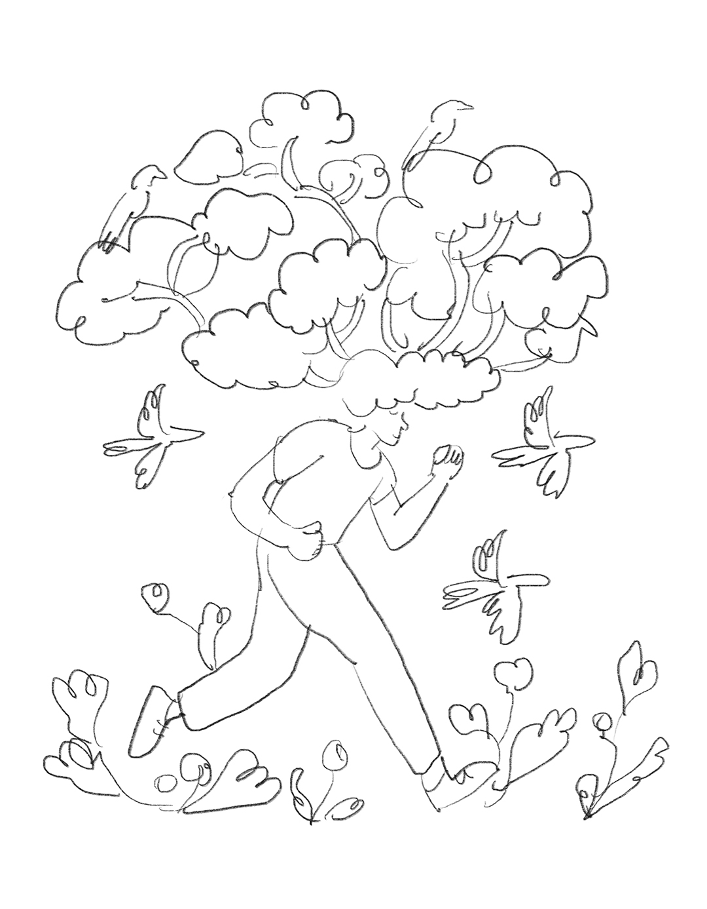

I created this illustration for Like the Wind magazine, to accompany a poem by Yuki Hayashi,
'the Runner Who Turned into a Tree'.
In my interpretation, the transformation into a tree is only visible around the character’s head, to suggest that the change exists purely within his mind, while the rest of his body remains as others would perceive it.
I played around with foliage shapes, to make it seems like the character's head is 'in the clouds'.
In my interpretation, the transformation into a tree is only visible around the character’s head, to suggest that the change exists purely within his mind, while the rest of his body remains as others would perceive it.
I played around with foliage shapes, to make it seems like the character's head is 'in the clouds'.

Let’s work together!
Send me a creative brief along with your budget and project timeline.